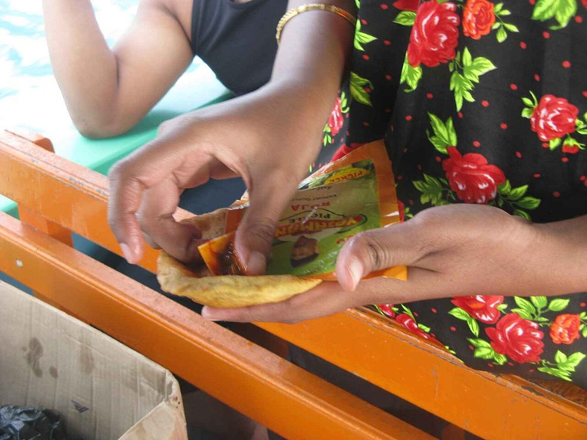

Start the day before. The fermenting alone is 6 hr, against 45 min of actual work.
Contains: milk, gluten
Ingredients
Quantities for 12.
- 350g Maida
- 3, very ripe, mashed Bananathe riper and blacker the better
- 60g Sugar
- 3 tbsp Yogurt
- 1 tsp Cumin Seeds
- 1/2 tsp Baking Soda
- 500ml for deep frying Neutral Oil
- 1/2 tsp Salt
Cookware
stovetop, kadhai
Checked against the ingredient list for ten allergens: milk, egg, fish, crustaceans, tree nuts, peanuts, sesame, mustard, soy and gluten. Brands vary, so read the label on anything new to you.
Before you start
- Despite the name they are puris, not bread. The dough must rest 6 hours or overnight, which is where the flavour comes from.
- No water goes in at all. The banana and curd carry the dough.
Method
- Mash the bananas with the sugar until liquid, then mix in the curd, cumin, soda and salt.
- Work in the flour to a soft dough. Add no water.It will feel sticky at first. Keep working it and it comes together.
- Cover and rest 6 hours or overnight at room temperature. It will darken and smell faintly fermented.
- Roll into thick 10cm discs, thicker than a normal puri.
- Fry one at a time in hot oil, pressing gently with the back of a slotted spoon until it puffs, then turn.
- Drain and serve warm with coconut chutney.
Storage
Keeps 2 days in an airtight box at room temperature and stays notably soft, which is what they are known for.
Nutrition Good estimate
Low protein: 4 g a serving, 6% of the calories
| Per serving112 g | Per 100 g | |
|---|---|---|
| Calories | 263 kcal | 235 kcal |
| Protein | 4.1 g | 4 g |
| Carbohydrate | 49.1 g | 44 g |
| of which sugars | 17.1 g | 15 g |
| Fibre | 2.0 g | 2 g |
| Fat | 6.5 g | 6 g |
| of which saturated | 0.7 g | 1 g |
| of which unsaturated | 5.1 g | 5 g |
Estimated from raw ingredients using USDA FoodData Central.
More like this: Vegetarian Indian recipes · No onion no garlic recipes · Karnataka recipes
Times, yields, allergens and nutrition are guidance. Use your own judgement on doneness and on storing. More in About.